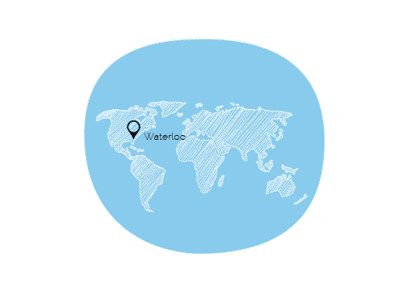

Contact Information
- 64 University Avenue East Waterloo, Ontario
 iamdrake@drakethedeveloper.com
iamdrake@drakethedeveloper.com (519)-992-2024
(519)-992-2024

let's create something great
Hi there! I'm Drake Dereniowski and I'm a Front-End Developer and UX Designer from Windsor, Ontario. I'm currently enrolled at the University of Waterloo completing my degree in Global Business & Digital Arts with hopes of pursuing my passion in Web Design. I enjoy creating pixel perfect websites that are centered around a seamless and minimal user experience design through the use of HTML5, CSS3 and jQuery.
As a current University student I am continually learning new skills which I can apply to my future in Front-End Web Development. So far, I have taught myself HTML5, CSS3, and a bit of jQuery and hope to expand my knowledge in these areas. For the time being, this is my current skill set and I will continue to learn more in my spare time.
iamdrake@drakethedeveloper.com (519)-992-2024